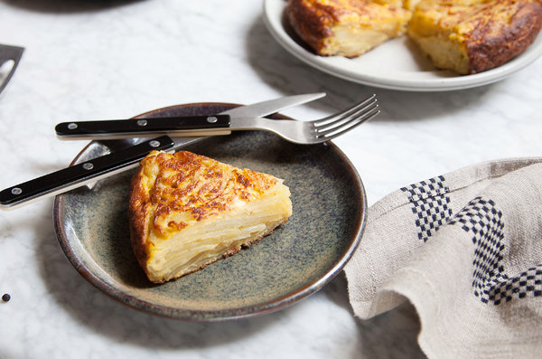

Spanish Tortilla

Description
The tortilla is a potato and egg open-faced omelet that derives most of its flavor from olive oil. Onions or scallions can replace the potato in part or entirely, as can cooked greens like chard. The only hard part is turning the partly formed tortilla, so do it swiftly and carefully (using a nonstick skillet makes it much easier). The worst that will happen is that a little potato and egg will be left behind when you return the cake to the skillet.
Ingredients
- 1 ¼ pounds potatoes, 3 or 4 medium
- 1 medium onion
- 1 cup olive oil
- Salt and freshly ground black pepper
- 6 extra-large or jumbo eggs
Preparation
-
Peel and thinly slice potatoes and onions; it's easiest if you use a mandoline. Meanwhile, heat oil in an 8- or 10-inch nonstick skillet over medium heat. After 3 or 4 minutes, drop in a potato slice. When tiny bubbles appear around its edges, add potatoes, onions, a good pinch of salt and a liberal sprinkling of pepper. Gently turn mixture in oil with a wooden spoon, and adjust heat so oil bubbles lazily.
-
Cook, turning potatoes gently every few minutes, until they are tender when pierced with a small knife. Adjust the heat so they do not brown. If potatoes begin to break, they are overdone; stop cooking immediately. As potatoes cook, beat eggs with some salt and pepper in a large bowl.
-
Drain potatoes in a colander, reserving oil. Wipe out skillet, and heat over a medium flame for a minute. Add 2 tablespoons oil. Gently mix warm potatoes with eggs, and add to skillet. As soon as edges firm up, after a minute or so, reduce heat to medium-low. Cook 5 minutes.
-
Insert a rubber spatula all around edges of tortilla to make sure it will slide from pan. The top will still be runny. Carefully slide out onto a plate. Cover with another plate, and holding plates tightly, invert them. Add another tablespoon oil to skillet, and use the spatula to coax tortilla back in. Cook 5 minutes, then slide from skillet onto a clean plate. Serve warm (not hot), or at room temperature. Do not refrigerate.
Home